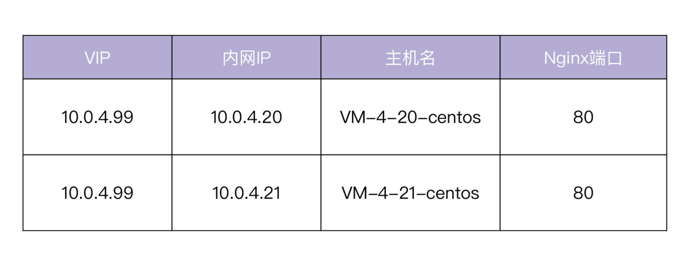
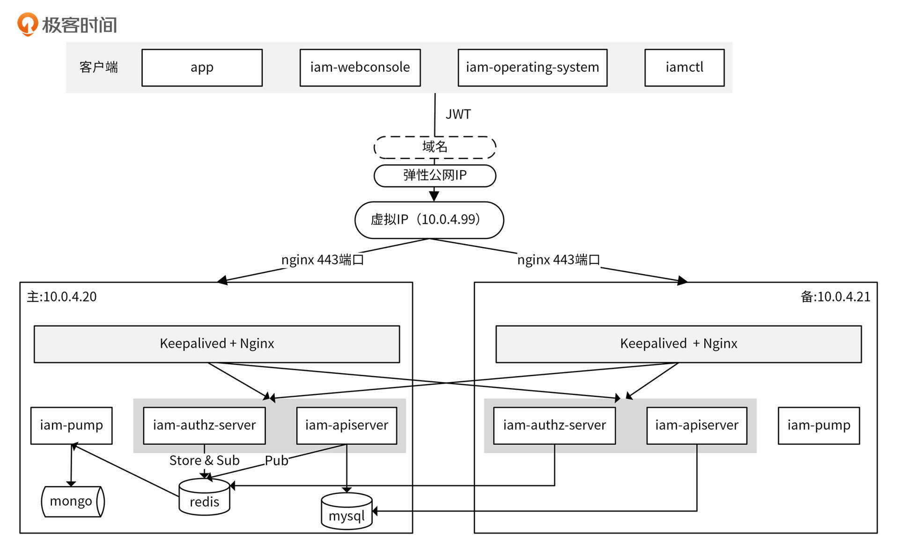

- 00 开篇词 从 0 开始搭建一个企业级 Go 应用.md
- 01 IAM系统概述：我们要实现什么样的 Go 项目？.md
- 02 环境准备：如何安装和配置一个基本的 Go 开发环境？.md
- 03 项目部署：如何快速部署 IAM 系统？.md
- 04 规范设计（上）：项目开发杂乱无章，如何规范？.md
- 05 规范设计（下）：commit 信息风格迥异、难以阅读，如何规范？.md
- 06 目录结构设计：如何组织一个可维护、可扩展的代码目录？.md
- 07 工作流设计：如何设计合理的多人开发模式？.md
- 08 研发流程设计（上）：如何设计 Go 项目的开发流程？.md
- 09 研发流程设计（下）：如何管理应用的生命周期？.md
- 10 设计方法：怎么写出优雅的 Go 项目？.md
- 11 设计模式：Go常用设计模式概述.md
- 12 API 风格（上）：如何设计RESTful API？.md
- 13 API 风格（下）：RPC API介绍.md
- 14 项目管理：如何编写高质量的Makefile？.md
- 15 研发流程实战：IAM项目是如何进行研发流程管理的？.md
- 16 代码检查：如何进行静态代码检查？.md
- 17 API 文档：如何生成 Swagger API 文档 ？.md
- 18 错误处理（上）：如何设计一套科学的错误码？.md
- 19 错误处理（下）：如何设计错误包？.md
- 20 日志处理（上）：如何设计日志包并记录日志？.md
- 21 日志处理（下）：手把手教你从 0 编写一个日志包.md
- 22 应用构建三剑客：Pflag、Viper、Cobra 核心功能介绍.md
- 23 应用构建实战：如何构建一个优秀的企业应用框架？.md
- 24 Web 服务：Web 服务核心功能有哪些，如何实现？.md
- 25 认证机制：应用程序如何进行访问认证？.md
- 26 IAM项目是如何设计和实现访问认证功能的？.md
- 27 权限模型：5大权限模型是如何进行资源授权的？.md
- 28 控制流（上）：通过iam-apiserver设计，看Web服务的构建.md
- 29 控制流（下）：iam-apiserver服务核心功能实现讲解.md
- 30 ORM：CURD 神器 GORM 包介绍及实战.md
- 31 数据流：通过iam-authz-server设计，看数据流服务的设计.md
- 32 数据处理：如何高效处理应用程序产生的数据？.md
- 33 SDK 设计（上）：如何设计出一个优秀的 Go SDK？.md
- 34 SDK 设计（下）：IAM项目Go SDK设计和实现.md
- 35 效率神器：如何设计和实现一个命令行客户端工具？.md
- 36 代码测试（上）：如何编写 Go 语言单元测试和性能测试用例？.md
- 37 代码测试（下）：Go 语言其他测试类型及 IAM 测试介绍.md
- 38 性能分析（上）：如何分析 Go 语言代码的性能？.md
- 39 性能分析（下）：API Server性能测试和调优实战.md
- 40 软件部署实战（上）：部署方案及负载均衡、高可用组件介绍.md
- 41 软件部署实战（中）：IAM 系统生产环境部署实战.md
- 42 软件部署实战（下）：IAM系统安全加固、水平扩缩容实战.md
- 43 技术演进（上）：虚拟化技术演进之路.md
- 44 技术演进（下）：软件架构和应用生命周期技术演进之路.md
- 45 基于Kubernetes的云原生架构设计.md
- 46 如何制作Docker镜像？.md
- 47 如何编写Kubernetes资源定义文件？.md
- 48 IAM 容器化部署实战.md
- 49 服务编排（上）：Helm服务编排基础知识.md
- 50 服务编排（下）：基于Helm的服务编排部署实战.md
- 51 基于 GitHub Actions 的 CI 实战.md
- 特别放送 Go Modules依赖包管理全讲.md
- 特别放送 Go Modules实战.md
- 特别放送 IAM排障指南.md
- 特别放送 分布式作业系统设计和实现.md
- 特别放送 给你一份Go项目中最常用的Makefile核心语法.md
- 特别放送 给你一份清晰、可直接套用的Go编码规范.md
- 直播加餐 如何从小白进阶成 Go 语言专家？.md
- 结束语 如何让自己的 Go 研发之路走得更远？.md
40 软件部署实战（上）：部署方案及负载均衡、高可用组件介绍
你好，我是孔令飞。
接下来，我们就进入到这门课的最后一个模块，服务部署部分的学习。在这一模块中，我会带着你一步一步地部署一个生产级可用的IAM应用。
在 03讲 中，我们快速在单机上部署了IAM系统，但这样的系统缺少高可用、弹性扩容等能力，是很脆弱的，遇到流量波峰、发布变更很容易出问题。在系统真正上线前，我们需要重新调整部署架构，来保证我们的系统具有负载均衡、高可用、弹性伸缩等核心运维能力。
考虑到你手中的系统资源有限，这一模块会尽量简单地展示如何部署一个相对高可用的IAM系统。按照我讲的部署方法，基本上可以上线一个中小型的系统。
在这一模块中，我会介绍两种部署方式。
第一种是传统的部署方式，基于物理机/虚拟机来部署，容灾、弹性伸缩能力要部署人员自己实现。第二种是容器化部署方式，基于Docker、Kubernetes来部署，容灾、弹性伸缩等能力，可以借助Kubernetes自带的能力来实现。
接下来的三讲，我们先来看下传统的部署方式，也就是如何基于虚拟机来部署IAM应用。今天我主要讲跟IAM部署相关的两个组件，Nginx + Keepalived的相关功能。
部署方案
先来整体看下我们的部署方案。
这里，我采用Nginx + Keepalived来部署一个高可用的架构，同时将组件都部署在内网，来保证服务的安全和性能。
部署需要两台物理机/虚拟机，组件之间通过内网访问。所需的服务器如下表所示：

两台服务器均为腾讯云CVM，VIP（Virtual IP，虚拟IP）为10.0.4.99。部署架构如下图所示：

这里我来具体介绍下图中的部署架构。部署采用的这两台CVM服务器，一主一备，它们共享同一个VIP。同一时刻，VIP只在一台主设备上生效，当主服务器出现故障时，备用服务器会自动接管VIP，继续提供服务。
主服务器上部署了iam-apiserver、iam-authz-server、iam-pump和数据库mongodb、redis、mysql。备服务器部署了iam-apiserver、iam-authz-server和iam-pump。备服务器中的组件通过内网10.0.4.20访问主服务器中的数据库组件。
主备服务器同时安装了Keepalived和Nginx，通过Nginx的反向代理功能和负载均衡功能，实现后端服务iam-apiserver和iam-authz-server的高可用，通过Keepalived实现Nginx的高可用。
我们通过给虚拟IP绑定腾讯云弹性公网IP，从而使客户端可以通过外网IP访问内网的Nginx服务器（443端口），如果想通过域名访问内网，还可以申请域名指向该弹性公网IP。
通过以上部署方案，我们可以实现一个具有较高可用性的IAM系统，它主要具备下面这几个能力。
- 高性能：可以通过Nginx的负载均衡功能，水平扩容IAM服务，从而实现高性能。
- 具备容灾能力：通过Nginx实现IAM服务的高可用，通过Keepalived实现Nginx的高可用，从而实现核心组件的高可用。
- 具备水平扩容能力：通过Nginx的负载均衡功能，实现IAM服务的水平扩容。
- 高安全性：将所有组件部署在内网，客户端只能通过
VIP:443端口访问Nginx服务，并且通过开启TLS认证和JWT认证，保障服务有一个比较高的安全性。因为是腾讯云CVM，所以也可以借助腾讯云的能力再次提高服务器的安全性，比如安全组、DDoS防护、主机安全防护、云监控、云防火墙等。
这里说明下，为了简化IAM应用的安装配置过程，方便你上手实操，有些能力，例如数据库高可用、进程监控和告警、自动伸缩等能力的构建方式，这里没有涉及到。这些能力的构建方式，你可以在日后的工作中慢慢学习和掌握。
接下来，我们看下这个部署方案中用到的两个核心组件，Nginx和Keepalived。我会介绍下它们的安装和配置方法，为你下一讲的学习做准备。
Nginx安装和配置
Nginx功能简介
这里先简单介绍下Nginx。Nginx是一个轻量级、高性能、开源的HTTP服务器和反向代理服务器。IAM系统使用了Nginx反向代理和负载均衡的功能，下面我就来分别介绍下。
为什么需要反向代理呢？在实际的生产环境中，服务部署的网络（内网）跟外部网络（外网）通常是不通的，这就需要一台既能够访问内网又能够访问外网的服务器来做中转，这种服务器就是反向代理服务器。Nginx作为反向代理服务器，简单的配置如下：
server {
listen 80;
server_name iam.marmotedu.com;
client_max_body_size 1024M;
location / {
proxy_set_header Host $http_host;
proxy_set_header X-Forwarded-Host $http_host;
proxy_set_header X-Real-IP $remote_addr;
proxy_set_header X-Forwarded-For $proxy_add_x_forwarded_for;
proxy_pass http://127.0.0.1:8080/;
client_max_body_size 100m;
}
}
Nginx的反向代理功能，能够根据不同的配置规则转发到不同的后端服务器上。假如我们在IP为x.x.x.x的服务器上，用上面说的Nginx配置启动Nginx，当我们访问http://x.x.x.x:80/时，会将请求转发到http://127.0.0.1:8080/。listen 80指定了Nginx服务器的监听端口，proxy_pass http://127.0.0.1:8080/则指定了转发路径。
Nginx另一个常用的功能是七层负载均衡。所谓的负载均衡，就是指当Nginx收到一个HTTP请求后，会根据负载策略将请求转发到不同的后端服务器上。比如iam-apiserver部署在两台服务器A和B上，当请求到达Nginx后，Nginx会根据A和B服务器上的负载情况，将请求转发到负载较小的那台服务器上。
这里要求iam-apiserver是无状态的服务。Nginx有多种负载均衡策略，可以满足不同场景下的负载均衡需求。
Nginx安装步骤
接下来，我就来介绍下如何安装和配置Nginx。
我们分别在10.0.4.20和10.0.4.21服务器上执行如下步骤，安装Nginx。
在CentOS 8.x系统上，我们可以使用yum命令来安装，具体安装过程可以分为下面4个步骤。
第一步，安装Nginx：
$ sudo yum -y install nginx
第二步，确认Nginx安装成功：
$ nginx -v
nginx version: nginx/1.14.1
第三步，启动Nginx，并设置开机启动：
$ sudo systemctl start nginx
$ sudo systemctl enable nginx
Nginx默认监听80端口，启动Nginx前要确保80端口没有被占用。当然，你也可以通过修改Nginx配置文件/etc/nginx/nginx.conf修改Nginx监听端口。
第四步，查看Nginx启动状态：
$ systemctl status nginx
输出中有active (running)字符串，说明成功启动。如果Nginx启动失败，你可以查看/var/log/nginx/error.log日志文件，定位错误原因。
Keepalived安装和配置
Nginx自带负载均衡功能，并且当Nginx后端某个服务器故障后，Nginx会自动剔除该服务器，将请求转发到可用的服务器，通过这种方式实现后端API服务的高可用。但是 Nginx是单点的，如果Nginx挂了，后端的所有服务器就都不能访问，所以在实际生产环境中，也需要对Nginx做高可用。
业界最普遍采用的方法是通过Keepalived对前端Nginx实现高可用。Keepalived + Nginx的高可用方案具有服务功能强大、维护简单等特点。
接下来，我们来看下如何安装和配置Keepalived。
Keepalived安装步骤
我们分别在10.0.4.20和10.0.4.21服务器上执行下面5个步骤，安装Keepalived。
第一步，下载Keepalived的最新版本（这门课安装了当前的最新版本 2.1.5）：
$ wget https://www.keepalived.org/software/keepalived-2.1.5.tar.gz
第二步，安装Keepalived：
$ sudo yum -y install openssl-devel # keepalived依赖OpenSSL，先安装依赖
$ tar -xvzf keepalived-2.1.5.tar.gz
$ cd keepalived-2.1.5
$ ./configure --prefix=/usr/local/keepalived
$ make
$ sudo make install
第三步，配置Keepalived：
$ sudo mkdir /etc/keepalived # 安装后，默认没有创建/etc/keepalived目录
$ sudo cp /usr/local/keepalived/etc/keepalived/keepalived.conf /etc/keepalived/keepalived.conf
$ sudo cp /usr/local/keepalived/etc/sysconfig/keepalived /etc/sysconfig/keepalived
Keepalived的systemd uint配置，默认使用了/usr/local/keepalived/etc/sysconfig/keepalived作为其EnvironmentFile，我们还需要把它修改为/etc/sysconfig/keepalived文件。编辑/lib/systemd/system/keepalived.service文件，设置EnvironmentFile，值如下：
EnvironmentFile=-/etc/sysconfig/keepalived
第四步，启动Keepalived，并设置开机启动：
$ sudo systemctl start keepalived
$ sudo systemctl enable keepalived
这里要注意，Keepalived启动时不会校验配置文件是否正确，所以我们要小心修改配置，防止出现意想不到的问题。
第五步，查看Keepalived的启动状态：
$ systemctl status keepalived
输出中有active (running)字符串，说明成功启动。Keepalived的日志保存在/var/log/messages中，你有需要的话可以查看。
Keepalived配置文件解析
Keepalived的默认配置文件为/etc/keepalived/keepalived.conf，下面是一个Keepalived配置：
# 全局定义，定义全局的配置选项
global_defs {
# 指定keepalived在发生切换操作时发送email，发送给哪些email
# 建议在keepalived_notify.sh中发送邮件
notification_email {
[email protected]
}
notification_email_from [email protected] # 发送email时邮件源地址
smtp_server 192.168.200.1 # 发送email时smtp服务器地址
smtp_connect_timeout 30 # 连接smtp的超时时间
router_id VM-4-21-centos # 机器标识，通常可以设置为hostname
vrrp_skip_check_adv_addr # 如果接收到的报文和上一个报文来自同一个路由器，则不执行检查。默认是跳过检查
vrrp_garp_interval 0 # 单位秒，在一个网卡上每组gratuitous arp消息之间的延迟时间，默认为0
vrrp_gna_interval 0 # 单位秒，在一个网卡上每组na消息之间的延迟时间，默认为0
}
# 检测脚本配置
vrrp_script checkhaproxy
{
script "/etc/keepalived/check_nginx.sh" # 检测脚本路径
interval 5 # 检测时间间隔（秒）
weight 0 # 根据该权重改变priority，当值为0时，不改变实例的优先级
}
# VRRP实例配置
vrrp_instance VI_1 {
state BACKUP # 设置初始状态为'备份'
interface eth0 # 设置绑定VIP的网卡，例如eth0
virtual_router_id 51 # 配置集群VRID，互为主备的VRID需要是相同的值
nopreempt # 设置非抢占模式，只能设置在state为backup的节点上
priority 50 # 设置优先级，值范围0～254，值越大优先级越高，最高的为master
advert_int 1 # 组播信息发送时间间隔，两个节点必须设置一样，默认为1秒
# 验证信息，两个节点必须一致
authentication {
auth_type PASS # 认证方式，可以是PASS或AH两种认证方式
auth_pass 1111 # 认证密码
}
unicast_src_ip 10.0.4.21 # 设置本机内网IP地址
unicast_peer {
10.0.4.20 # 对端设备的IP地址
}
# VIP，当state为master时添加，当state为backup时删除
virtual_ipaddress {
10.0.4.99 # 设置高可用虚拟VIP，如果是腾讯云的CVM，需要填写控制台申请到的HAVIP地址。
}
notify_master "/etc/keepalived/keepalived_notify.sh MASTER" # 当切换到master状态时执行脚本
notify_backup "/etc/keepalived/keepalived_notify.sh BACKUP" # 当切换到backup状态时执行脚本
notify_fault "/etc/keepalived/keepalived_notify.sh FAULT" # 当切换到fault状态时执行脚本
notify_stop "/etc/keepalived/keepalived_notify.sh STOP" # 当切换到stop状态时执行脚本
garp_master_delay 1 # 设置当切为主状态后多久更新ARP缓存
garp_master_refresh 5 # 设置主节点发送ARP报文的时间间隔
# 跟踪接口，里面任意一块网卡出现问题，都会进入故障(FAULT)状态
track_interface {
eth0
}
# 要执行的检查脚本
track_script {
checkhaproxy
}
}
这里解析下配置文件，大致分为下面4个部分。
- global_defs：全局定义，定义全局的配置选项。
- vrrp_script checkhaproxy：检测脚本配置。
- vrrp_instance VI_1：VRRP实例配置。
- virtual_server：LVS配置。如果没有配置LVS+Keepalived，就不用设置这个选项。这门课中，我们使用Nginx代替LVS，所以无需配置
virtual_server（配置示例中不再展示）。
只有在网络故障或者自身出问题时，Keepalived才会进行VIP切换。但实际生产环境中，我们往往使用Keepalived来监控其他进程，当业务进程出故障时切换VIP，从而保障业务进程的高可用。
为了让Keepalived感知到Nginx的运行状况，我们需要指定vrrp_script脚本，vrrp_script脚本可以根据退出码，判断Nginx进程是否正常，0正常，非0不正常。当不正常时，Keepalived会进行VIP切换。为了实现业务进程的监控，我们需要设置vrrp_script和track_script：
vrrp_script checkhaproxy
{
script "/etc/keepalived/check_nginx.sh"
interval 3
weight -20
}
vrrp_instance test
{
...
track_script
{
checkhaproxy
}
...
}
这里，我介绍下上面配置中的一些配置项。
- script：指定脚本路径。
- interval：表示Keepalived执行脚本的时间间隔（秒）。
- weight：检测权重，可以改变
priority的值。例如，-20表示检测失败时，优先级-20，成功时不变。20表示检测成功时，优先级+20，失败时不变。
总结
今天我主要讲了跟IAM部署相关的两个组件，Nginx + Keepalived的相关功能。
我们可以基于物理机/虚拟机来部署IAM应用，在部署IAM应用时，需要确保整个应用具备高可用和弹性扩缩容能力。你可以通过Nginx的反向代理功能和负载均衡功能实现后端服务iam-apiserver和iam-authz-server的高可用，通过Keepalived实现Nginx的高可用，通过Nginx + Keepalived组合，来实现IAM应用的高可用和弹性伸缩能力。
课后练习
- Keepalived的主备服务器要接在同一个交换机上。思考下，如果交换机故障，如何实现整个系统的高可用？
- iam-pump是有状态的服务，思考下，如何实现iam-pump的高可用？
欢迎你在留言区与我交流讨论，我们下一讲见。
© 2019 - 2023 Liangliang Lee. Powered by gin and hexo-theme-book.